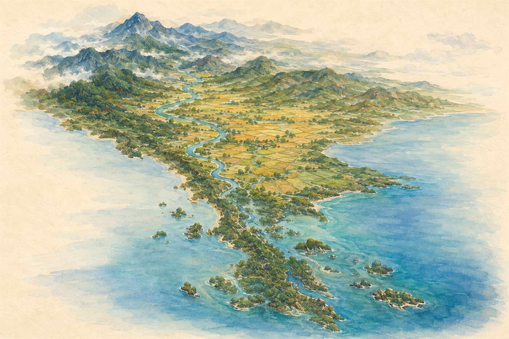

สมุดบทเรียนหลัก · การศึกษาแนววอลดอร์ฟ · ป.5
จากดอยสูงทางเหนือ สู่ทะเลสองฝั่งทางใต้ — ทำความรู้จักแผ่นดินไทยทั้งหกภูมิภาค และสายน้ำที่หล่อเลี้ยงเรา

แผ่นดินไทยแบ่งเป็น 6 ภูมิภาคตามลักษณะภูมิประเทศ แต่ละภาคมีธรรมชาติ อาหาร และวิถีชีวิตเป็นของตัวเอง
เต็มไปด้วยดอยสูงสลับหุบเขา อากาศเย็นสบาย เป็นต้นกำเนิดแม่น้ำปิง วัง ยม น่าน มีดอยอินทนนท์ยอดเขาสูงสุดของประเทศ (2,565 เมตร)
จังหวัดสำคัญ: เชียงใหม่ เชียงราย น่าน แม่ฮ่องสอน ลำปาง
ภูมิภาคที่ใหญ่ที่สุด เป็นที่ราบสูงมีแม่น้ำโขงไหลเลียบพรมแดน แม่น้ำมูลและชีหล่อเลี้ยงท้องนา ดินแดนแห่งข้าวเหนียว หมอลำ และปลาร้า
จังหวัดสำคัญ: ขอนแก่น อุบลราชธานี อุดรธานี นครราชสีมา
อู่ข้าวอู่น้ำของประเทศ ที่ราบกว้างใหญ่อุดมสมบูรณ์จากแม่น้ำเจ้าพระยา เป็นที่ตั้งของกรุงเทพมหานครและราชธานีเก่าอย่างอยุธยาและสุโขทัย
จังหวัดสำคัญ: กรุงเทพฯ พระนครศรีอยุธยา สุพรรณบุรี นครปฐม
ชายหาดสวยงามริมอ่าวไทย และสวนผลไม้เลื่องชื่อ — ทุเรียน เงาะ มังคุด จากจันทบุรีและระยองส่งไปทั่วโลก
จังหวัดสำคัญ: ชลบุรี ระยอง จันทบุรี ตราด
แนวเทือกเขาตะนาวศรีกั้นพรมแดนไทย–เมียนมา มีป่าใหญ่ เขื่อนสำคัญ และแม่น้ำแควที่ไหลรวมเป็นแม่น้ำแม่กลอง
จังหวัดสำคัญ: กาญจนบุรี ราชบุรี เพชรบุรี ประจวบคีรีขันธ์
แผ่นดินแคบยาวขนาบด้วยทะเลอ่าวไทยและอันดามัน ฝนตกชุกทั้งปี เหมาะกับสวนยางพาราและปาล์มน้ำมัน มีเกาะงดงามระดับโลก
จังหวัดสำคัญ: ภูเก็ต สงขลา สุราษฎร์ธานี นครศรีธรรมราช
แม่น้ำคือเส้นเลือดของแผ่นดิน — ชาวไทยตั้งบ้านเรือน ปลูกข้าว และค้าขายริมสายน้ำมาแต่โบราณ
แม่น้ำสี่สายจากภาคเหนือไหลลงมารวมกันเป็นสองสาย แล้วบรรจบกันที่ปากน้ำโพ จังหวัดนครสวรรค์:
แผนที่คือภาษาของนักภูมิศาสตร์ — อ่านเป็นเมื่อไหร่ เราจะเดินทางไปได้ทุกที่บนโลกโดยไม่หลง
บนแผนที่ ทิศเหนืออยู่ด้านบนเสมอ ยกเว้นจะระบุไว้เป็นอย่างอื่น
มาตราส่วน 1 : 100,000 หมายความว่า ระยะ 1 หน่วยบนแผนที่ เท่ากับ 100,000 หน่วยจริงบนพื้นโลก
ลากขนานรอบโลกในแนวนอน บอกว่าอยู่เหนือหรือใต้เส้นศูนย์สูตรเท่าใด
เส้นศูนย์สูตรคือ 0° ขั้วโลกเหนือคือ 90° เหนือ
ประเทศไทยอยู่ที่ประมาณ 6°–20° เหนือ จึงเป็นเขตร้อน
ลากจากขั้วโลกเหนือถึงใต้ในแนวตั้ง บอกว่าอยู่ตะวันออกหรือตะวันตกของเส้นเมริเดียนแรกที่กรีนิช
ประเทศไทยอยู่ที่ประมาณ 97°–105° ตะวันออก เวลาจึงเร็วกว่ากรีนิช 7 ชั่วโมง
ประเทศไทยมี 3 ฤดู ไม่ใช่ 4 เพราะเราอยู่ในเขตร้อน — และผู้กำหนดฤดูของเราคือ "ลมมรสุม" ที่เปลี่ยนทิศปีละ 2 ครั้ง
ช่วงเวลา: กลางพฤษภาคม – กลางตุลาคม
พัดจากมหาสมุทรอินเดียซึ่งชื้นมาก จึงพาฝนมาให้ทั้งประเทศ — นี่คือฤดูฝนของเรา ภาคใต้ฝั่งอันดามันจะรับฝนหนักที่สุด
ช่วงเวลา: กลางตุลาคม – กลางกุมภาพันธ์
พัดจากแผ่นดินจีนซึ่งแห้งและเย็น จึงนำอากาศหนาวมาให้ภาคเหนือและอีสาน แต่พอพัดผ่านอ่าวไทยจะอุ้มความชื้น ทำให้ภาคใต้ฝั่งอ่าวไทยมีฝนตกช่วงนี้แทน
กลาง ก.พ. – กลาง พ.ค.
ดวงอาทิตย์ตั้งฉากกับประเทศไทย อากาศร้อนจัด เมษายนร้อนที่สุด
กลาง พ.ค. – กลาง ต.ค.
มรสุมตะวันตกเฉียงใต้พัดเข้ามา กันยายนฝนตกชุกที่สุด เป็นฤดูทำนา
กลาง ต.ค. – กลาง ก.พ.
มรสุมตะวันออกเฉียงเหนือพัดลงมา ภาคเหนือและอีสานหนาวที่สุด
เพราะภาคใต้อยู่ใกล้เส้นศูนย์สูตรที่สุด และมีทะเลขนาบทั้งสองด้าน น้ำทะเลช่วยรักษาอุณหภูมิไม่ให้เปลี่ยนแปลงมาก ภาคใต้จึงมีเพียง 2 ฤดู คือฤดูฝนและฤดูร้อน และฝนตกยาวนานเกือบทั้งปี เหมาะกับสวนยางพาราและปาล์มน้ำมันที่ต้องการความชื้นสูง
สมาคมประชาชาติแห่งเอเชียตะวันออกเฉียงใต้ (ASEAN) ก่อตั้งเมื่อ 8 สิงหาคม พ.ศ. 2510 ที่กรุงเทพมหานคร โดยเริ่มจาก 5 ประเทศ ปัจจุบันมี 10 ประเทศ คำขวัญคือ "หนึ่งวิสัยทัศน์ หนึ่งอัตลักษณ์ หนึ่งประชาคม"
| ประเทศ | เมืองหลวง | สกุลเงิน | เกร็ดน่ารู้ |
|---|---|---|---|
| ไทย | กรุงเทพมหานคร | บาท | ประเทศเดียวในอาเซียนที่ไม่เคยเป็นเมืองขึ้นของชาติตะวันตก |
| เมียนมา | เนปยีดอ | จ๊าด | ประเทศที่ใหญ่ที่สุดในอาเซียนภาคพื้นทวีป มีพรมแดนติดไทยยาวที่สุด |
| ลาว | เวียงจันทน์ | กีบ | ประเทศเดียวในอาเซียนที่ไม่มีทางออกสู่ทะเล |
| กัมพูชา | พนมเปญ | เรียล | ที่ตั้งของนครวัด ศาสนสถานที่ใหญ่ที่สุดในโลก |
| เวียดนาม | ฮานอย | ด่ง | รูปร่างประเทศยาวเรียวคล้ายตัว S ส่งออกข้าวและกาแฟรายใหญ่ |
| มาเลเซีย | กัวลาลัมเปอร์ | ริงกิต | แบ่งเป็นสองส่วนคั่นด้วยทะเลจีนใต้ |
| สิงคโปร์ | สิงคโปร์ | ดอลลาร์สิงคโปร์ | เล็กที่สุดในอาเซียนแต่ร่ำรวยที่สุด เป็นท่าเรือสำคัญของโลก |
| บรูไน | บันดาร์เสรีเบกาวัน | ดอลลาร์บรูไน | ประชากรน้อยที่สุด ร่ำรวยจากน้ำมันและก๊าซธรรมชาติ |
| อินโดนีเซีย | จาการ์ตา | รูเปียห์ | ประเทศหมู่เกาะที่ใหญ่ที่สุดในโลก มีกว่า 17,000 เกาะ ประชากรมากที่สุดในอาเซียน |
| ฟิลิปปินส์ | มะนิลา | เปโซ | ประเทศหมู่เกาะกว่า 7,000 เกาะ ตั้งอยู่บนวงแหวนไฟจึงมีภูเขาไฟมาก |
ไทย · มาเลเซีย · อินโดนีเซีย · ฟิลิปปินส์ · สิงคโปร์ → ท่องว่า “ไทย มา อิน ฟิ ส”
ต่อมาบรูไนเข้าร่วมปี 2527 · เวียดนามปี 2538 · ลาวและเมียนมาปี 2540 · กัมพูชาปี 2542 (เข้าเป็นชาติสุดท้าย)
ทายให้ถูกว่าแต่ละจังหวัดอยู่ภูมิภาคใดของประเทศไทย